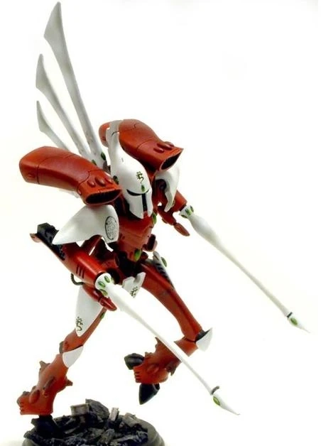

Aspects of the hobby
Building Miniatures
Building miniatures allows for creativity to shine. Models come on sheets called sprues. You then cut the pieces off of the sprue and glue them together to create a model. You normally follow the given directions for assembly, but it is not required and even encouraged to make the models your own by adding or not adding details. These models come highly detailed and allow the owner to enjoy what they create.
Painting Miniatures
Painting allows accomplished artists to display their skill. There are recommended paint guides and colors for each model but it is not required to follow. You can make them your own by creating your own color scheme. The details on some of the models provide accomplishment to those with a steady hand and plenty of patience.
Battles
Table top battles are where you can display and show off your army. It allows you to compete against a friend or foe in a one on one battle. This wargame generally leaves even those that lost having an enjoyable time being able to see their work in action!
Collecting
Collecting an army can take some time. You can plan out which models you choose to obtain next easily by looking them up. Finding ones that appeal to you is part of the fun! Pretty soon you will have a whole army and still want to continue building up your collection!